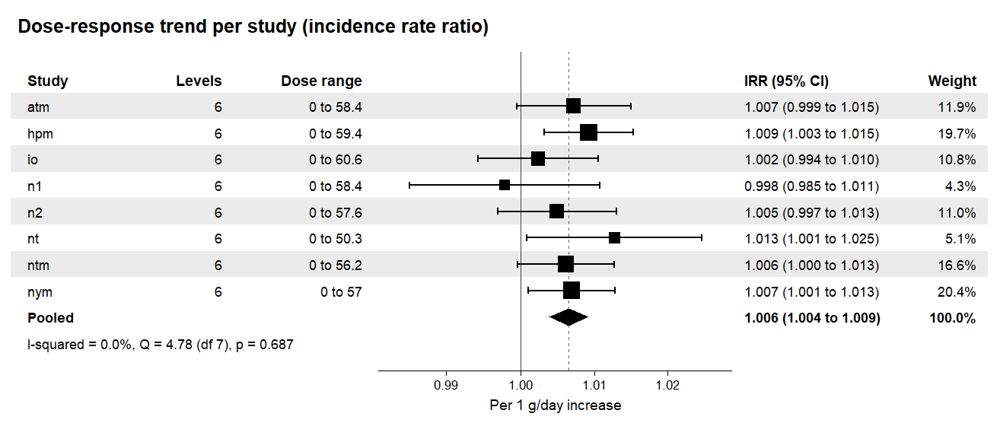
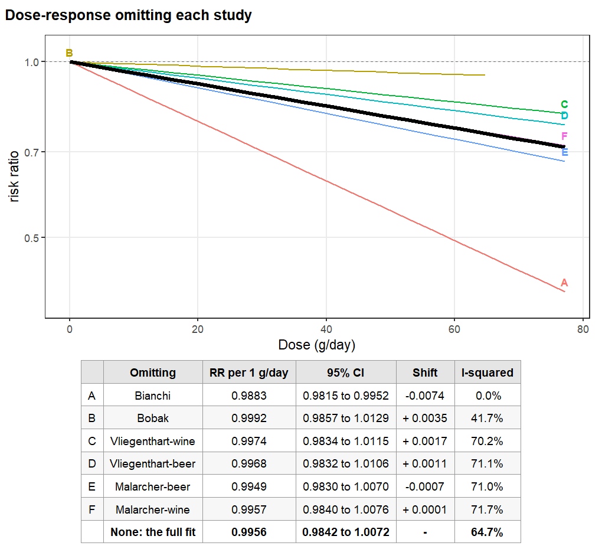
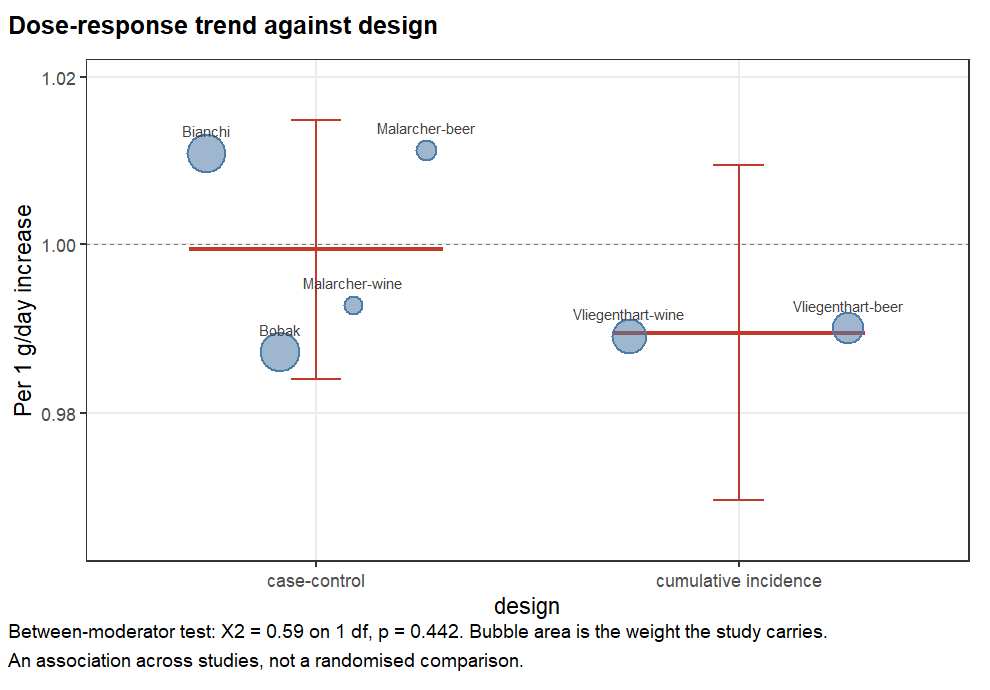
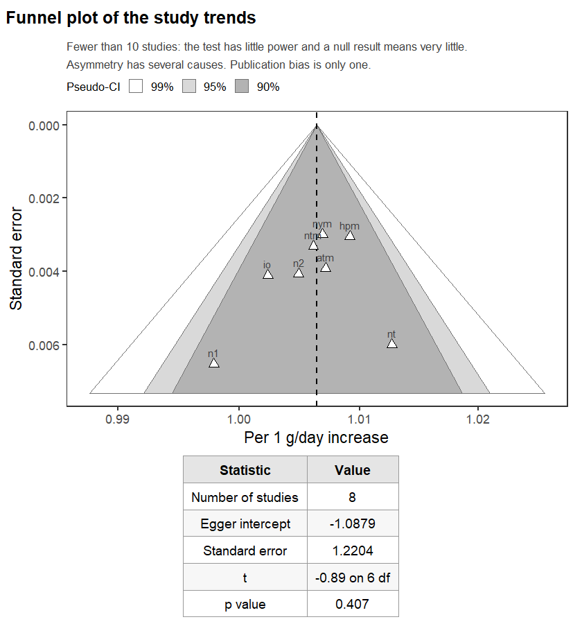

Four questions, four calls, each taking the object easydr() returned
fit <- easydr(alcohol_cancer, sm = "IRR", shape = "linear", dose.unit = "g/day") easydr_forest(fit) # a curve has no single trend, so the # rows become one dose easydr_forest(rcs, at = 25)
A dose-response study contributes a trend, not an effect, so that is what a row shows: the study's own slope from the two-stage first stage. These are the engine's own estimates, not something recomputed for the picture, and the function hands the table back so you can check them.
proc = "2stage".


cvd <- easydr(alcohol_cvd, sm = "RR", shape = "linear", dose.unit = "g/day") # draws the figure beside this easydr_loo(cvd, quiet = TRUE) # the table alone, nothing drawn loo <- easydr_loo(cvd, quiet = TRUE, plot = FALSE) loo$table
Curve A is the fit without Bianchi, and it is the one that walks away from the black line. Dropping that cohort takes I-squared from 71% to nothing: it was most of the heterogeneity.
The rows carry no p value. The refits share almost all their data, so they are not independent and a shift is not a test.
mr <- easydr_metareg(cvd, ~ design) mr easydr_bubble(mr, labels = TRUE)

easydr_metareg(), not from a fresh regression
through the points. That is why a study can sit off the bar: the
distance is the residual heterogeneity the printout quantifies.
f <- easydr_funnel(fit, labels = TRUE) f$egger #> $intercept -1.0879 #> $se 1.2204 #> $t -0.8914 on 6 df #> $p 0.4070
With eight studies the test has little power, so the figure says so above the panel rather than leaving it to be remembered. Asymmetry has several causes and publication bias is only one.
